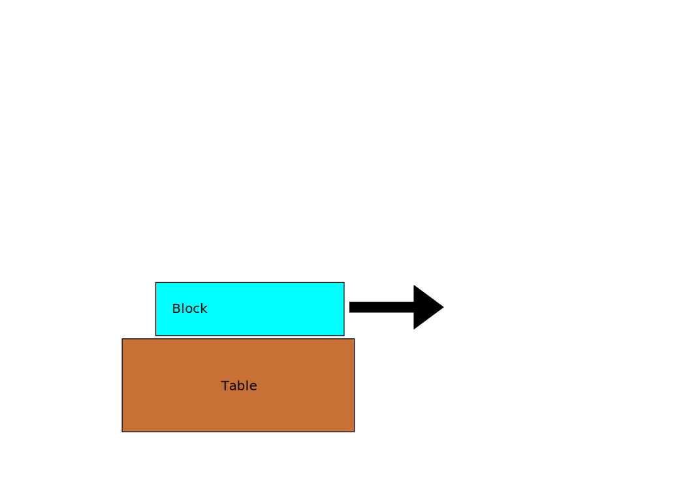
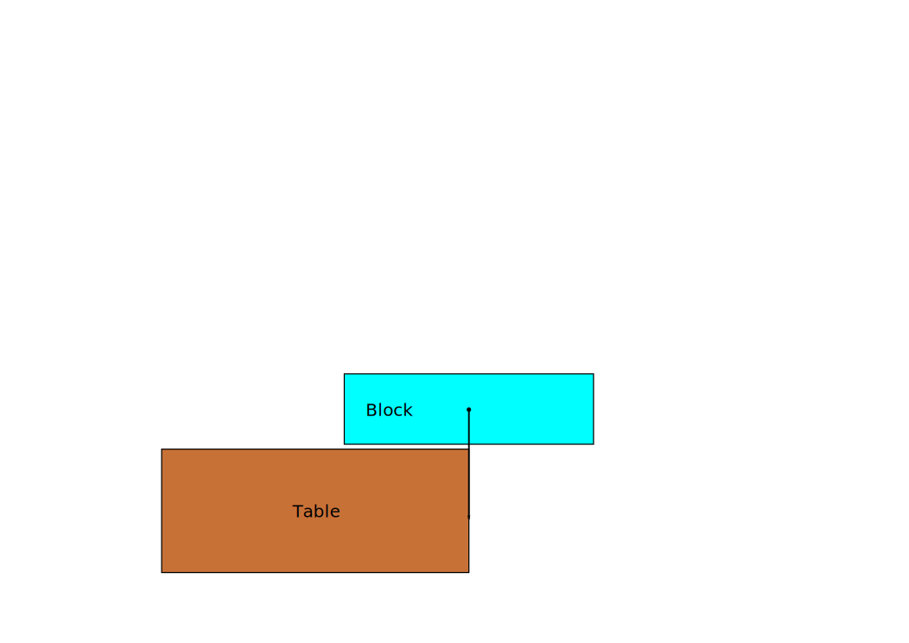
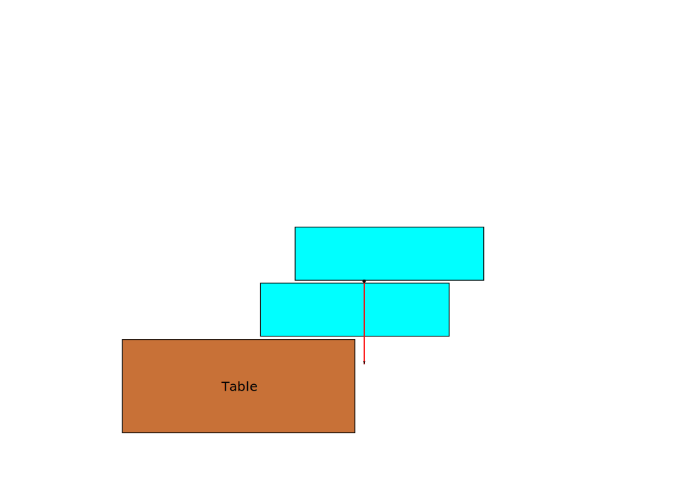
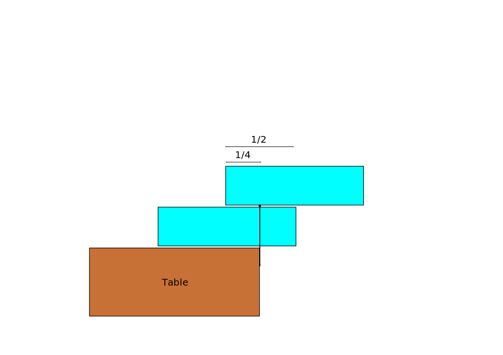
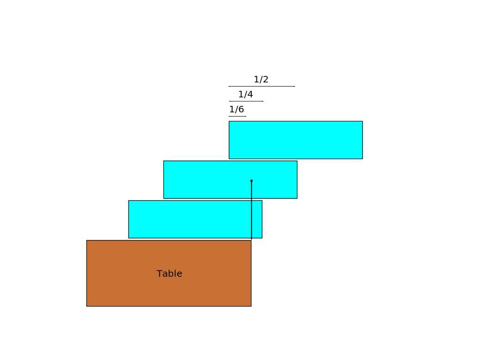
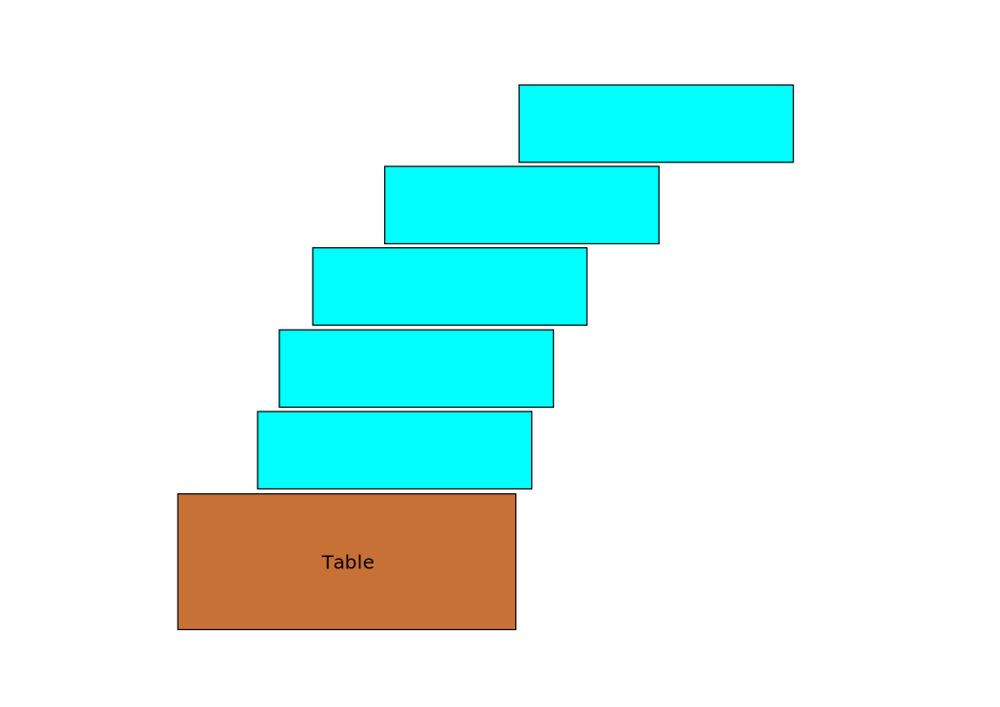

How not to Build Pyramids with Ice
Block of ice sitting on a table
How far out can you put it?

Depends on the center-of-gravity

How about another identical ice block?

Need to move first block

And a third?

Harmonic series
\begin{equation}
x_n = \frac{1}{2} \sum\limits_{i=1}^n \frac{1}{i}
\end{equation}
After 5 blocks

Asynchronous Javascript
Single-threaded
One thing at a time
Use callbacks
So you can do other work instead of just waiting
It’s hell
MongoClient.connect('mongodb://127.0.0.1:27017/test', function(err, db) { if(err) throw err; db.dropDatabase(function(err, done) { db.createCollection('test_custom_key', function(err, collection) { collection.insert({'a':1}, function(err, docs) { collection.find({'_id':new ObjectID("aaaaaaaaaaaa")}).toArray(function(err, items) { console.dir(items); db.close(); }); }); }); }); });
Squint and look at it sideways
Some possible solutions
- Use named callbacks
- Async.js, Q, etc (Node’s wiki)
- ECMAScript 6 (When?)
CoffeeScript
Ruby and Python inspired syntax
Compiles quickly to Javascript
Good correspondence between CS and resultant JS
CoffeeScript examples
math = root: Math.sqrt square: square cube: (x) -> x * square x race = (winner, runners...) -> print winner, runners alert "I knew it!" if elvis?
math = {
root: Math.sqrt,
square: square,
cube: function(x) {
return x * square(x);
}
};
race = function() {
var runners, winner;
winner = arguments[0], runners = 2 <= arguments.length ? __slice.call(arguments, 1) : [];
return print(winner, runners);
};
if (typeof elvis !== "undefined" && elvis !== null) {
alert("I knew it!");
}
Iced CoffeeScript
Fork of CoffeeScript
Drop-in replacement
Well, nearly. Works except for new keyword conflicts.
What’s new?
await … defer
await…
await marks the start of a block that needs callbacks
await
some_long_running_function param_1, param_2, callback
… defer
defer takes some slots, and returns a callback function
await some_long_running_function param1, param2, defer(slot1, slot2)
await … defer
await waits for all defer s before proceeding, after which, the slots are filled
search = (keyword, cb) -> api = "https://www.googleapis.com/customsearch/v1" url = "#{api}?q=#{keyword}&key=#{key}&cx=#{cx}&alt=json" await request url: url, json: true, defer e, r, json cb json.items
search = (keyword, cb) -> api = "https://www.googleapis.com/customsearch/v1" url = "#{api}?q=#{keyword}&key=#{key}&cx=#{cx}&alt=json" request url: url, json: true, (e, r, json) -> cb json.items
What’s new?
await … defer
autocb
return cb() is a common pattern
search = (keyword, cb) -> api = "https://www.googleapis.com/customsearch/v1" url = "#{api}?q=#{keyword}&key=#{key}&cx=#{cx}&alt=json" await request url: url, json: true, defer e, r, json cb json.items
With autocb
search = (keyword, autocb) -> api = "https://www.googleapis.com/customsearch/v1" url = "#{api}?q=#{keyword}&key=#{key}&cx=#{cx}&alt=json" await request url: url, json: true, defer e, r, json return json.items
autocb for multiple returns
search = (keyword, autocb) -> if keyword? api = "https://www.googleapis.com/customsearch/v1" url = "#{api}?q=#{keyword}&key=#{key}&cx=#{cx}&alt=json" await request url: url, json: true, defer e, r, json return json.items else return "" # => cb ""
Flattening pyramids
await MongoClient.connect 'mongodb://127.0.0.1:27017/test', defer err, db if err throw err await db.dropDatabase defer err, done await db.createCollection 'test_custom_key', defer err, collection await collection.insert 'a':1, defer err, docs await collection.find('_id':new ObjectID("aaaaaaaaaaaa")).toArray defer err, items console.dir items db.close()
if … else
await if diskCache.has n diskCache.get n, defer value else networkClient.get n, defer value doSomethingWith value
for
serialSearch = (keywords, autocb) -> out = [] for k,i in keywords await search k, defer out[i] return out
for in parallel
parallelSearch = (keywords, autocb) -> out = [] await for k,i in keywords search k, defer out[i] return out
If we didn’t have ICS?
parallelSearch = (keywords, cb) -> results = [] n_out = 0 cb_generator = (i) -> n_out++ (json) -> results[i] = json if n_out-- is 0 cb results for k,i in keywords search k, cb_generator i
serialSearch = (keywords, cb) -> result = [] i = 0 launch = () -> if i < keywords.length j = i++ search keywords[j], cb_generator j else cb results cb_generator = (i) -> (json) -> results[i] = json launch() launch()
We want it all!
Mix both serial and parallel: Limit simultaneous parallel operations?
Naïve way
Do in batches of n
windowedSearch = (keywords, autocb, n=4) -> out = [] for i in [0...keywords.length] by n await for j in [i...i+n] when j < keywords.length search keywords[j], defer out[j] return out
How about keeping n requests in-flight at any time?
Using Rendevous
rendevousSearch = (keywords, autocb, n=4) -> out = [] rv = new iced.Rendezvous nsent = 0 nrecv = 0 while nrecv < keywords.length if nsent - nrecv < n and nsent < n search keywords[nsent], rv.defer out[nsent] nsent++ else await rv.wait defer() nrecv++ return out
Using Pipeliner
{Pipeliner} = require 'icedlib'
pipelinerSearch = (keywords, autocb, n=4) ->
out = []
pipeliner = new Pipeliner n
for k, i in keywords
await pipeliner.waitInQueue defer()
search k, pipeliner.defer out[i]
await pipeliner.flush defer()
return out
Try many, but use the first hit
E.g. post a single request to multiple servers and use the fastest result
firstSearch = (engines, keyword, autocb) -> out = [] rv = new iced.Rendezvous for e, i in engines searchWith e, keyword, rv.defer out[i] await rv.wait defer which return out[which]
Time out
What if a request takes too long?
parallelSearch = (keywords, autocb) -> out = [] await for k,i in keywords search k, defer out[i] return out
timeout to the rescue
{timeout} = require 'icedlib'
parallelSearch = (keywords, autocb, maxTime=500) ->
out = []
await
for k,i in keywords
search k, timeout defer(out[i]), maxTime
return out
It’s easy
Asynchronous callbacks with Iced CoffeeScript are easy
Who would’ve thunk?
Download & contact
http://thirteen37.github.io/ics-intro
- limyuxi@gmail.com
- @snarfnbarf
/
← → #